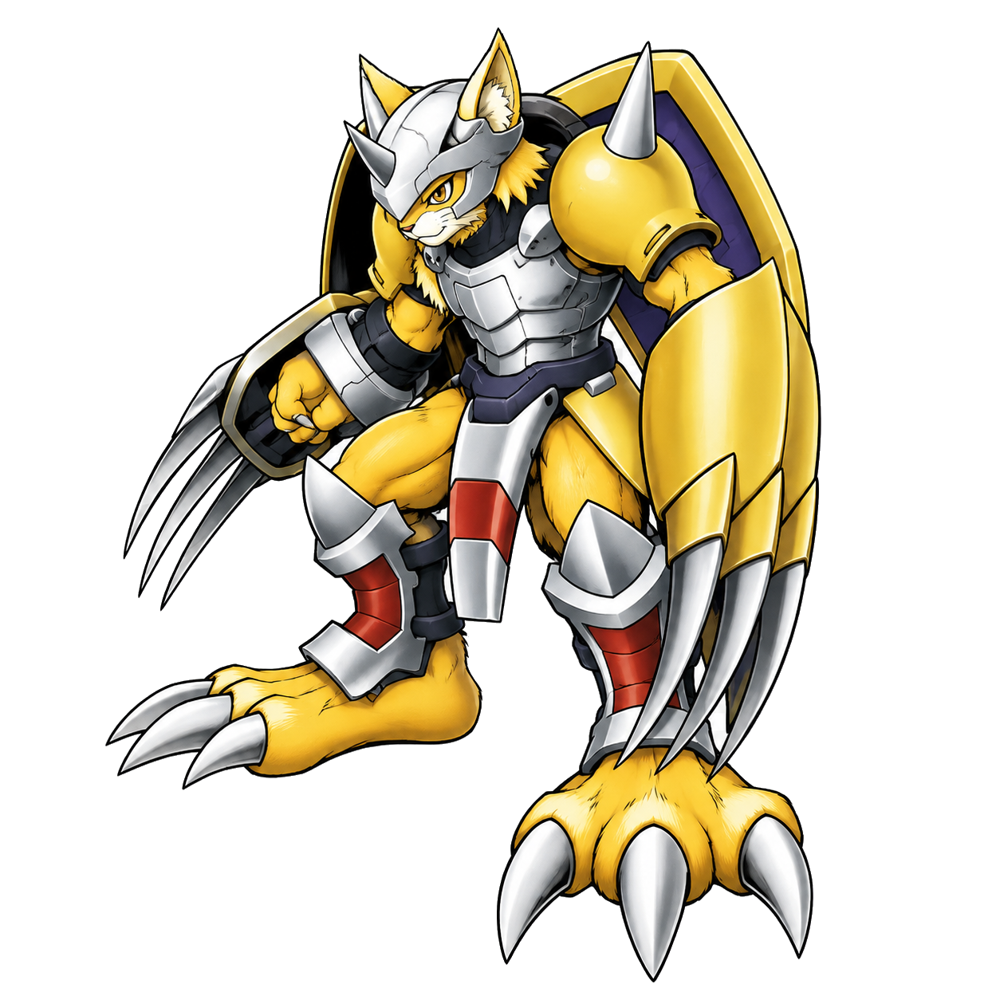
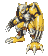
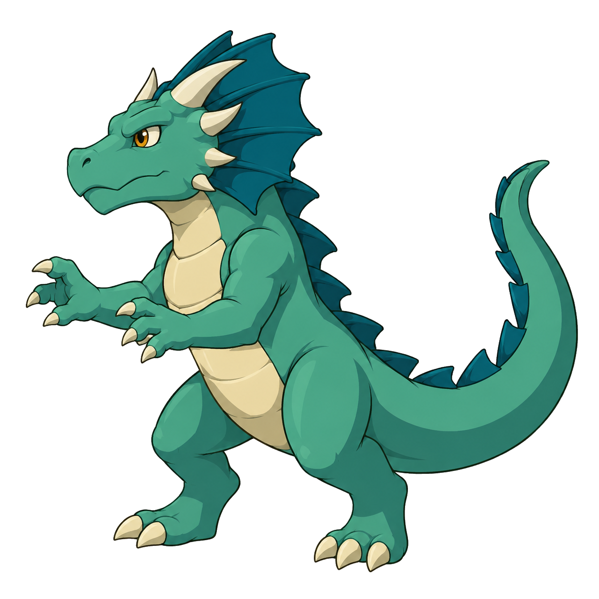
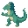

M503 使用你提供的原始設定圖進行貓化。下方是實際高清生成稿與從同一張稿縮小的點陣候選。
單體外觀候選｜原姿態對位、細部像素修整與完整動作待驗收｜尚未替換遊戲預設
保留巨大爪甲、金色肩甲與背盾，改為貓耳、短貓吻、金色毛皮與貓科足掌。

48×56 原生點陣，下面依序為原尺寸與固定 8 倍：

玉綠頭身、象牙角、深青背脊與奶油腹部，各部位以完整色塊區分。

32×32 原生點陣，下面依序為原尺寸與固定 8 倍：

全員設定圖庫 · 製作與狀態紀錄